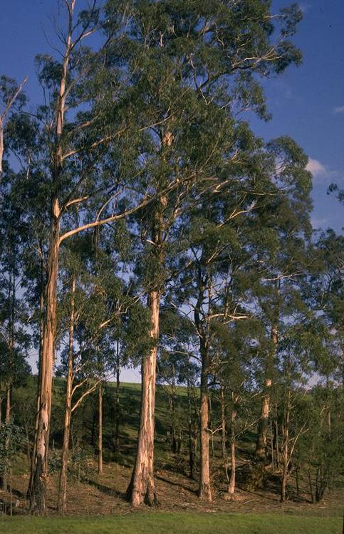
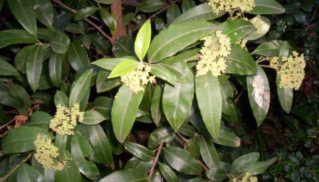
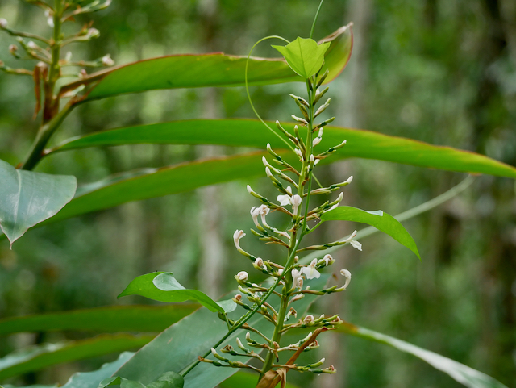
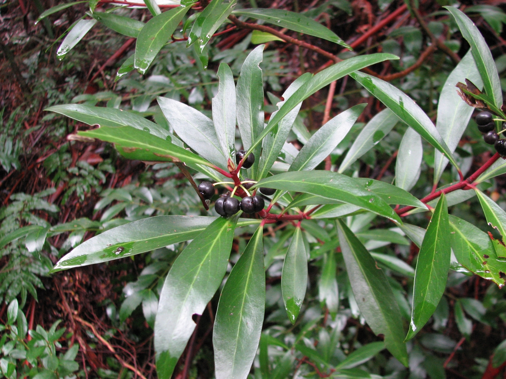
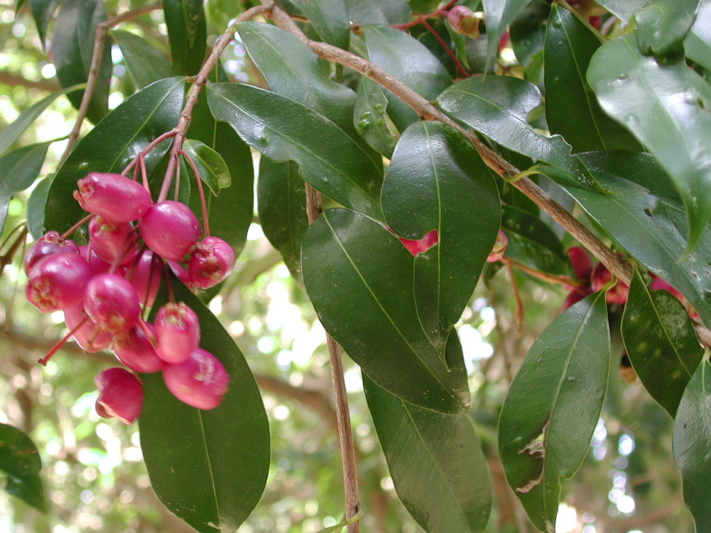

📑 Contents
Natural Medicine by Ailment
This index maps common survival medical conditions to the most appropriate plant remedies. Start here if you have a specific condition to treat.
Always verify plant identification and read the full plant entry before use. Cross-reference with the Safety Guide.
Wounds & Infection
Goal: Clean wound, prevent infection, promote healing.
| Plant | Region | Action | Preparation |
|---|---|---|---|
| Tea tree | AU | Antiseptic, antifungal | Diluted oil or poultice |
| Eucalyptus | AU | Antiseptic wash | Decoction or diluted oil |
| Lemon myrtle | AU | Strong antimicrobial | Infusion as wash |
| Black wattle | AU | Astringent, wound drying | Decoction as wash |
| Honey (not a plant) | All | Antimicrobial barrier | Apply directly to wound |
Protocol for wound care: 1. Clean wound thoroughly with clean water 2. Apply antiseptic wash (tea tree decoction, eucalyptus or lemon myrtle infusion) 3. Apply wound-healing poultice (pounded tea tree leaves) 4. Cover with clean dressing 5. Change dressing and reapply twice daily
Digestive
Goal: Settle stomach, stop diarrhoea, support digestion.
| Plant | Region | Action | Preparation |
|---|---|---|---|
| Native ginger | AU | Digestive aid | Chew root, infusion |
| Mountain pepper | AU | Digestive stimulant | Infusion of leaves |
| Black wattle | AU | Astringent for diarrhoea | Decoction of bark |
Diarrhoea protocol: 1. Hydrate aggressively (clean water, oral rehydration if possible) 2. Black wattle bark decoction — astringent action 3. Avoid solid food for 12–24 hours 4. Reintroduce bland food (rice, banana) slowly
Fever
Goal: Reduce fever safely, manage symptoms, prevent complications.
| Plant | Region | Action | Preparation |
|---|---|---|---|
| Bitter bark | AU (QLD/NSW) | Traditional fever reducer (very bitter — similar to quinine) | Bark decoction — use sparingly. Do not use in high doses — can cause vomiting. Do not use in pregnancy. |
| Willow (Salix spp.) | All | Salicin (aspirin precursor) | Decoction of bark (southern watercourses only — not available in arid/tropical outback) |
Fever management: 1. Monitor temperature — above 40°C is dangerous 2. Cool compresses to forehead and armpits 3. Hydrate continuously 4. Rest and monitor — seek any available medical help if fever persists beyond 3 days
Pain & Inflammation
Goal: Reduce pain, inflammation, and swelling.
| Plant | Region | Action | Preparation |
|---|---|---|---|
| Tick bush | AU | Anti-inflammatory, analgesic | Infused oil, poultice |
| Willow (Salix spp.) | All | Analgesic (salicin) | Decoction of bark |
Note: Willow bark contains salicin, the natural precursor to aspirin. It is effective for mild-to-moderate pain but can cause stomach irritation. Avoid if you have a history of gastric ulcers.
Respiratory
Goal: Clear congestion, soothe cough, support breathing.
| Plant | Region | Action | Preparation |
|---|---|---|---|
| Eucalyptus | AU | Decongestant, expectorant | Steam inhalation, chest rub |
| Lemon myrtle | AU | Antimicrobial, decongestant | Steam inhalation |
| Tea tree | AU | Antimicrobial | Steam inhalation |
| Thyme (Thymus vulgaris) | All | Antitussive, antimicrobial | Infusion |
Steam inhalation protocol: 1. Boil water, add eucalyptus or lemon myrtle leaves 2. Pour into bowl, lean over with towel over head 3. Breathe deeply for 5–10 minutes 4. Repeat 2–3 times daily 5. Be careful of scalding — keep face at least 30 cm from water
Skin Conditions
Goal: Treat rashes, fungal infections, burns, insect bites.
| Plant | Region | Action | Preparation |
|---|---|---|---|
| Tea tree | AU | Antifungal, antibacterial | Diluted oil |
| Lemon myrtle | AU | Antimicrobial | Dilute infusion as wash |
| Aloe vera | All | Burns, sunburn | Fresh gel from leaf |
| Calendula (Calendula officinalis) | All | Skin healing, anti-inflammatory | Salve or poultice |
Fungal infection protocol: 1. Keep area clean and dry 2. Apply diluted tea tree oil twice daily 3. Continue for at least 7 days after symptoms resolve 4. Wash clothing and bedding in hot water if possible
Immune Support
Goal: Support immune function, recovery from illness, prevention.
| Plant | Region | Action | Preparation |
|---|---|---|---|
Immune support protocol (preventative): 1. Adequate rest and hydration 2. Native foods rich in vitamin C (Kakadu plum, lilly pilly) 3. Maintain good nutrition
Note: No Australian native plant identified specifically for immune support. Focus on nutrition, rest, and hydration.
Nutritional Support
Goal: Prevent deficiency diseases, supplement limited diet.
| Plant | Region | Nutrient | Preparation |
|---|---|---|---|
| Kakadu plum | AU | Vitamin C (highest natural source) | Eat fresh or dried |
| Lilly pilly | AU | Vitamin C | Eat fresh, jam |
| Black wattle | AU | Tannins, gum (emergency food) | Gum exudate |
Scurvy prevention: - Kakadu plum: 1–2 fruits daily - Lilly pilly: handful of fruit daily
Parasites
Goal: Expel intestinal parasites when pharmaceutical antiparasitics are unavailable.
| Plant | Region | Action | Preparation |
|---|---|---|---|
| Black wattle | AU | Tannins (anthelmintic) | Decoction of bark |
Parasite protocol: 1. Black wattle bark decoction for 7 days 2. Maintain strict hygiene — wash hands, boil water 3. Treat all members of group simultaneously
Note: Australian native plant options for parasites are limited. Standard pharmaceutical antiparasitics are strongly preferred.
Women's Health
No Australian native plant identified. See standard first aid.
Dental
| Plant | Region | Action | Preparation |
|---|---|---|---|
| Tea tree | AU | Antiseptic mouth rinse | Highly diluted |
| Black wattle | AU | Astringent for gums | Decoction as mouthwash |
Eye Conditions
No Australian native plant identified. See standard first aid.
General eye treatment protocol: 1. Boil water, prepare decoction or infusion 2. Strain through clean cloth multiple times 3. Cool to body temperature 4. Apply with sterile cloth as compress — do NOT pour into eye 5. If no improvement in 24 hours, discontinue
Plant Photo Reference
All images from Wikimedia Commons under CC BY-SA or public domain licences.
Tea Tree (Melaleuca alternifolia) — Antiseptic, antifungal

Eucalyptus (Eucalyptus globulus) — Antiseptic wash, decongestant

Lemon Myrtle (Backhousia citriodora) — Strong antimicrobial

Kakadu Plum (Terminalia ferdinandiana) — Highest natural vitamin C source

Tick Bush (Kunzea ambigua) — Anti-inflammatory

Native Ginger (Alpinia caerulea) — Digestive aid

Mountain Pepper (Tasmannia lanceolata) — Digestive stimulant

Lilly Pilly (Syzygium australe) — Vitamin C source

Black Wattle (Acacia mearnsii) — Astringent, tannin source

Corkwood (Duboisia myoporoides) — Antispasmodic (CAUTION: TOXIC)

Animal-Based Remedies
Honey — Wound antimicrobial barrier. Apply directly to clean wound and cover.
Maggot Therapy (debridement) — Certain fly larvae eat only dead tissue. Applied to infected wounds in desperate situations. Use only if you know how to identify the correct species.
Toxic Plants — DO NOT USE
See Herbal Safety Guide for complete information.